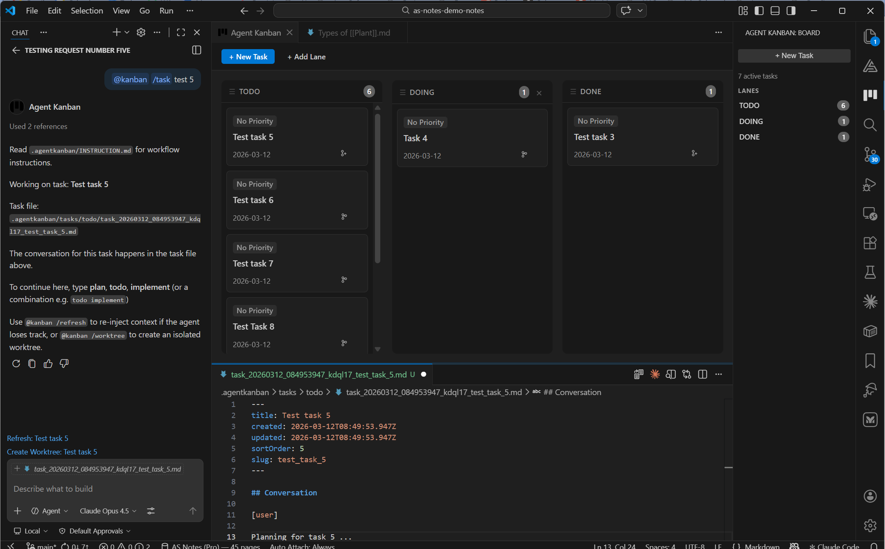
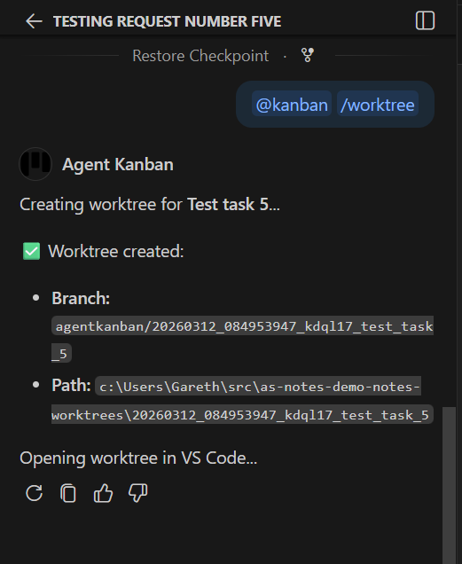
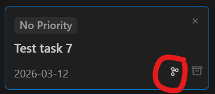
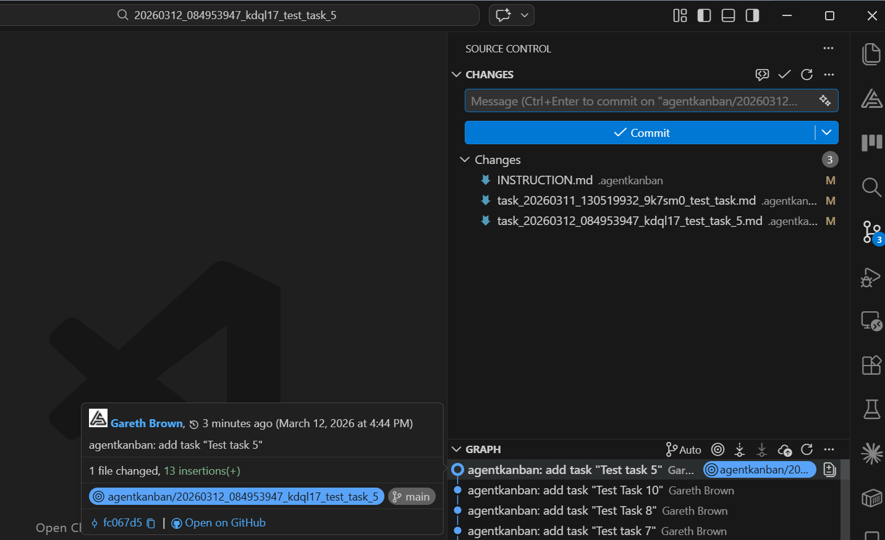

Fixing AGENT / LLM Context Decay in VS Code with Git Worktrees
The extension source is available on GitHub and the extension available on the VS Code Marketplace.
Where We Left Off
In a previous post, I introduced VS Code Agent Kanban. The key idea in this extension is the formalisation of a plan, todo implement flow that required the agent to converse in markdown files that I'd been using for a while - but manually managing the files (The reasoning and benefits of that flow are covered in the linked post).
For a good reference on this flow, I would recommend this article by Boris Tane boristane.com/blog/how-i-use-claude-code. I had been using this flow for a while, but this article helped solidify it for me.
A kanban board with lanes mapped to folders where the task markdown files live has gone a long way to helping organise those files, while the AGENTS.md instruction remains to prompt the agent to work in those files (the 'plan', 'todo' 'implement' conversation in the files is the important bit here, the kanban board just helps with the admin).

However, I ran into a secondary issue here whereby previously I was having the agent work in fixed name files plan.md and todo.md, but with the kanban board, the file names were specific to task and lane. While I could initially tell the agent which file to work in, the further back in the context that instruction was pushed, the less likely the agent was to remember it.
I added commands for the @kanban Copilot chat participant to inject a reference to the active task file, refreshing its name in the working context. This works via the /refresh command, and is still an optional flow in the tool where the user is working on smaller, simpler tasks. AGENTS.md has a sentinel section injected so that the agent is reminded on every turn that it should be checking for the referenced file. Still however, without the user remembering to use the refresh participant commands, the agent was liable to forget to converse in the task file.
Git Worktrees
The solution to this is Git worktrees (available in v2.0.0). Git worktrees are a standard Git feature that facilitates the creation of separate working directories mapped to branches, all linked to the same underlying repository.
VS Code Agent Kanban now has functionality to create worktrees and the associated Git branches from tasks in a one-to-one mapping.
Using worktrees, the extension is able to detect that it is working in the context of a worktree, infer the associated task, and update the sentinel section in AGENTS.md with a reference to a specific task.
<!-- BEGIN AGENT KANBAN — DO NOT EDIT THIS SECTION -->
Agent Kanban
Active Task: Implement OAuth2
Task File: .agentkanban/tasks/doing/task_20260312_091234567_oauth2.md
Read the task file above before responding.
Read .agentkanban/INSTRUCTION.md for task workflow rules.
<!-- END AGENT KANBAN -->
In this workflow, the AGENTS.md is sent with every turn, and the agent adheres to the plan, todo, implement flow, while reliably sticking to conversing in the task file.
Making it Work
We still needed to prevent the modified AGENTS.md from being committed with the specific task name so that we didn't have to deal with that on the merge back to the trunk. git update-index --skip-worktree AGENTS.md is used to tell Git to ignore the local changes to the file.
We also needed to ensure that changes to the task file in the original branch were committed so that it was present and up-to-date when VS Code switched to the new worktree.
A combination of Git commands and VS Code APIs are used to manage the automatic switch to the new worktree (some options are available with regards to worktree location and reopening in the same / a different window).
Creation of worktree by @kanban command

Creation of worktree from the task board

The new worktree can be initialised via the /worktree command or by clicking a button on the task in the task board.
VS Code has built in functionality for switching the window between worktrees.
The resulting VS Code window with the worktree initialised

Summary
This optionality formalises the process further, and makes the management of multiple task markdown files far more manageable while solving the problem of adhering to a specifically named task file.
Worktrees in themselves are a great feature, making it feasible to separate and switch between multiple long-running agent sessions within the same codebase, which was something that the original plan, todo, implement flow did not help with.
I hope you find this useful. If you think this process could be improved, feel free to comment / get in touch. We're all learning to use these new tools effectively alongside our existing (hopefully not soon to be obsolete) skills, and I've learned A LOT from all of you in the last few months (thank you 🙏)